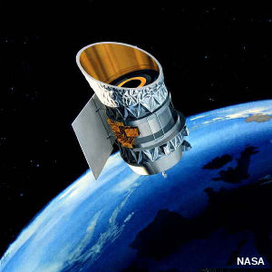

Ghosttech
GhosttechLegal stuff (kinda):
For Ghosttech be able to reach you, it needs a special type of Satellite that allows for Interdimensional communication, the model in questions is the 404UR ITDM. Sattelite (Displayed below). For that, we need funds to put more around the cosmos, that's where Ghostcoins come in. Ghostcoins are a special currency given by Ghosttech to partners and freelancers alike through special contracts. People who we help are often grateful enough to give us payment in commodities we can then turn into cash to amplify our reach, if that's not possible we can scrape what's left of the place for the same ends, if there is no one to save. For the Partners and Freelancers who solve the anomalies, we pay in Ghostcoins as previously mentioned, which you can buy exclusive artifacts on our store!
- 
Disclaimer:
Ghosttech do not responsabilize itself for any paradoxical events that may occur due to use of artifacts ahead of the your timeline, as well any body, mental or spiritual harm to any of their Partners or Freelancers. It's of those who accept the contract the full responsibility to take precautions against these forms of harm.